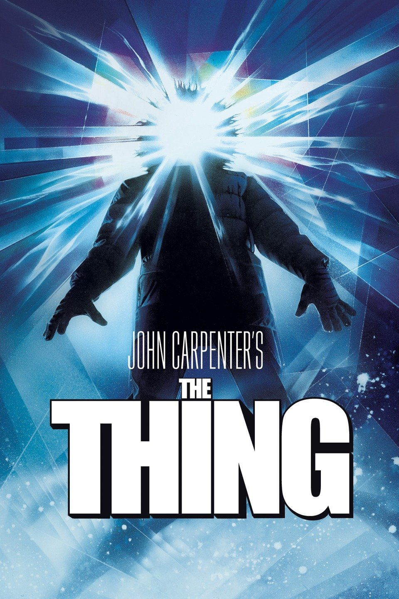
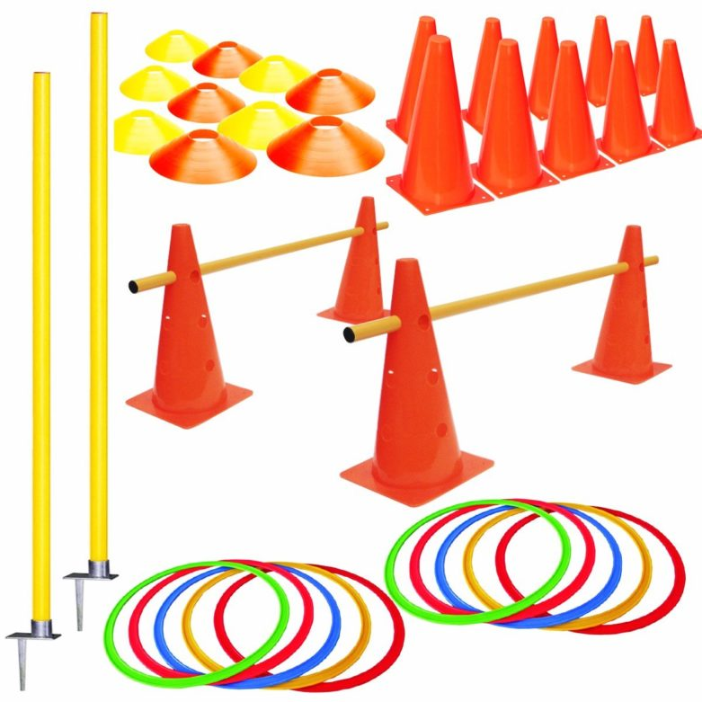
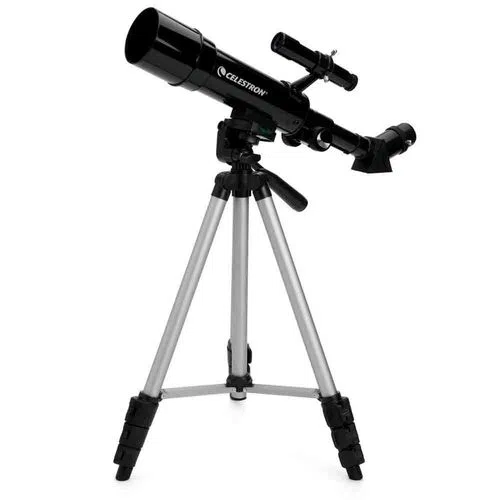
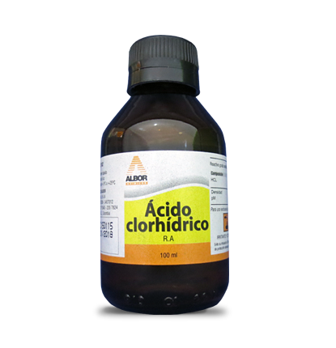
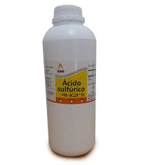

Revista Digital
Por Michael Espinoza.
Horror cósmico en la cultura pop Por: Esteban Matute
H.P Lovecraft fue un escritor, pero, sobre todo, un gran imaginativo, es considerado según muchos expertos cómo el creador de un nuevo género literario y artístico. El horror cósmico nos presenta, con un halo de misterio e impotencia, lo que mora más allá de los confines del espacio cómo algo inalcanzable, ineludible y sofocante, un terror que con su sola presencia nos enloquece. Con este cóctel de bizarreadas (en el sentido anglosajón de la palabra) se cuecen tramas que exploran el miedo más fundamental del ser humano, el miedo a lo desconocido. Esta manera de contar historias e infundir terror y fascinación nos puede sonar desconocida a muchos, pero los resquicios se observan aún en la cultura pop a través de diversas y muy conocidas obras.
El horror cósmico es un término muy amplio del que podemos definir ciertas características comunes pero que no se adaptan a una formula exacta, es común combinarlo con otros géneros lo que ocasiona curiosas mezclas que siempre varían un poco dependiendo del autor. Lo más importante es siempre la tendencia anti antropocentrista dónde los personajes, generalmente humanos, son nada más que peones ante las bestias que murmuran en la oscuridad sobrepasando a su pensamiento. La fragilidad humana es expresada en terror psicológico con aires funestos y pesimistas que nos hacen contemplar nuestro propio retraso madurativo como especie. Sin héroes o villanos, estos relatos intentan mostrarnos que lo que llamamos monstruos son dioses que no podemos comprender.
Pero ¿dónde podemos encontrar presente esto más allá de los libros? El cine es el mejor ejemplo de cómo adaptar este tipo de conceptos más allá de la literatura. Películas de terror muy conocidas cómo Alien e It o series como Juego de tronos nos presentan a seres humanos peleando con monstruos del espacio sideral que escapan a su comprensión. The thing es el clásico del terror del maestro John Carpenter, una película que nos presenta a unos investigadores en la Antártida que se topan con una cosa cambia formas que los atormenta y busca matarlos siendo un potencial peligro para la raza humana. Con esta premisa que toma elemento de En las montañas de la locura, Carpenter da cátedra de cómo dar miedo sin perder el factor del desconocimiento.
Otro de los grandes medios por los que se ha difundido esto es el arte de los videojuegos. Grandes videojuegos como Skyrim, The sinking city, Eternal darkness y World of Warcraft basan su historia o toman elementos de la obra de H.P Lovecraft. El más aclamado y conocido es Bloodborne, aquí encarnamos a un cazador en la ciudad de Yharnam en la noche de la caza, lugar en el que los habitantes han sido infectados por una misteriosa enfermedad proveniente de antiguos dioses. Con cultos extraños y una metrópoli sumida en una locura onírica, Bloodborne ha sido galardonado múltiples veces por su historia.
Finalmente hablemos de uno de mis artes favoritos, la música. Y aquí el término de horror cósmico y su definición se difuminan un poco pues el plasmar este miedo primordial y onírico a través de la música es simple y sencillamente titánico. Cuidar no solo la estética de cómo suena tu obra sino también lo que quiere reflejar es muy complicado, pero hay muy buenos ejemplos (aunque bastante desconocidos) de esto.

Quizá la más conocida sea The call of ktulu de Metallica, titulada cómo el relato más conocido de Lovecraft, la pieza adapta La sombra sobre Innsmouth de manera subliminal y cargada de simbolismos a través de una instrumental de casi nueve minutos. Me gustaría recomendar personalmente el álbum de The great old ones and other beings, un álbum conceptual en el que cada canción trata sobre un dios antiguo y que trasmite una gran estética lovecraftiana.
Aunque no siempre la sepamos ver o apreciar, la influencia del horror cósmico en la cultura popular y en la inspiración de otros artistas es notoria e inequívoca. Quizá hayas descubierto ahora mismo el concepto con lo que te acabo de contar, pero no por ello estás tarde a adentrarte en los abismos más recónditos y oscuros del arte de la mano de películas, series, canciones, libros y/o videojuegos que expandan nuestra visión de lo que es el horror. Al final, lo más importante en el arte es entretener.
La importancia de implementos académicos para un mejor rendimiento
Por: Danilo Beltrán, David Medina y Eduardo OrellanaEn el colegio Nuestra familia, en ciertas materias como: física, química y educación física, se utilizan implementos diferentes que las otras materias; en química y física hay prácticas de laboratorio con materiales específicos según la práctica planteada; y Educación física, de la misma manera, tiene materiales específicos para los ejercicios de cada clase, por lo cual consideramos necesario cuestionarnos ¿hay los suficientes materiales y las herramientas necesarias para estas asignaturas?, para responder esto decidimos realizar unas cuantas entrevistas a los profesores encargados de dichas asignaturas y de los laboratorios, también.
En el área de Educación Física se realizó una entrevista a Freddy Faicán, profesor de educación física en el bachillerato; se le preguntó sobre si los materiales para su área eran suficientes y si no lo eran ¿con qué frecuencia percibía la falta de materiales para sus clases? Respondió que sí hacen falta materiales para atletismo. También qué nos está faltando algunos implementos en el fútbol y básquet y que para ciertos ejercicios no contamos todavía con ciertos implementos necesarios. En resumen, hace falta materiales para lograr cumplir con todas las destrezas planteadas. Además, le preguntamos ¿con qué frecuencia faltan para sus clases los implementos? ¿Y su respuesta fue que “depende del bloque en el que estemos siempre necesitamos de algunos materiales extra para la materia, entonces si nos faltan cierta cantidad de implementos? Por lo cual la última pregunta fue ¿qué implementos le gustaría que se agreguen a su materia? a lo que no dudo en responder que: “balones de fútbol, de vóley, más conos, platos, estacas, vallas, entre otros materiales.
En cuanto a la materia de física se hizo la entrevista Esteban Matute, compañero de tercero de bachillerato, se le preguntó si el colegio cuenta con las herramientas necesarias para rendir al máximo en las clases y que materiales le gustaría integrar. Respondió que sí, si cuenta con lo necesario porque en las prácticas y en los experimentos propios del salón hay un montón de instrumentos que nos permiten entender muy bien el tema, como, por ejemplo, la construcción de un foco incandescente con una mina y todo lo que tiene que ver con eléctrica y electrónica se da muy bien porque tenemos siempre las herramientas disponibles. En cuanto a los implementos que le gustaría que se agreguen en los laboratorios, el estudiante agregó que a él le gusta mucho la cosmología por lo que le gustaría que agreguen ciertos diagramas o como herramientas para esta parte de la materia.
La materia de química también suele necesitar muchos implementos y herramientas, desde materiales para la seguridad de estudiantes, como insumos para que practiquen en el laboratorio, la Bioquímica Fernanda Faicán nos habla de que tenemos un 80% de materiales necesarios, a nivel de lo teórico podríamos decir que tenemos el 100% y usamos muchas estrategias virtuales, pero en el laboratorio nos faltan algunas cosas, algunas herramientas y algunos reactivos. “En algunas prácticas se vuelve complicado llevar a cabo las instrucciones o experimentos porque nos faltan materiales, no solo debido al costo, sino que también faltan por lo difícil de conseguirlos y por sus restricciones, faltan instrumentos que son bastante necesarios, pero a pesar de que tenemos deficiencias, la institución tiene un buen aporte, porque a comparación de otras instituciones, tampoco se llegan a realizar prácticas de laboratorio en ciertos colegios nos dice la bioquímica Fernanda Faican. De lo práctico se podría decir que, ha existido ciertas problemáticas, en ocasiones nos llegan los implementos después de las prácticas, de vez en cuando llegan tarde ciertos reactivos debido a los trámites que se deben tener para tener este tipo de productos en el laboratorio, entonces se debe considerar el tiempo de planificación para realizar ciertas actividades en el laboratorio. Nos comentó de ciertos elementos que le faltan a nuestra institución, “para mí materia sería muy útil, instrumentos como baño maría, en el colegio lo hacemos de forma casera, pero ahí nos están faltando muchos implementos, porque nos faltan, por ejemplo: ollas, y principalmente reactivos; como ácido sulfúrico y ácido clorhídrico, también otros tipos de reactivos qué son muy necesarios, si se considera con relación a la instrumentación sería bueno una adecuación de laboratorio, porque se utilizan demasiadas extensiones y eso de ahí puede ser muy riesgoso y se espera que haya una adecuación para el sistema de tomacorriente en las clases”.
En conclusión, el colegio si tiene algunas deficiencias en cuanto a los materiales para la realización de algunas clases, aun así, no ha sido impedimento para hacer, con diversas opciones, las actividades planificadas. Si se necesitaría tomar en cuenta algunos materiales para ciertas prácticas o actividades que se necesitan insumos específicos y rebasar esa limitante que, se podría presentar para el método de enseñanza y adquirir los conocimientos de forma un poco más práctica.
 